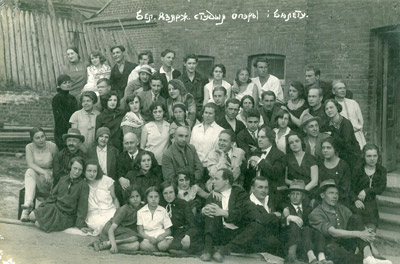
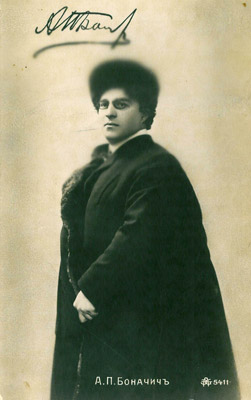
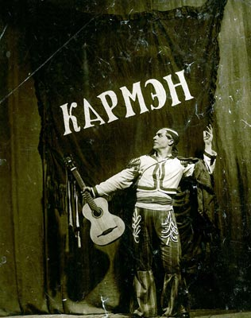
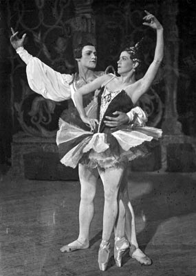
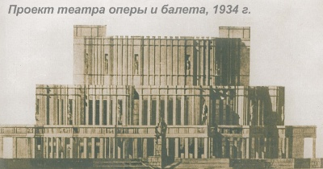

История Национального академического Большого театра оперы и балета Республики Беларусь
Театр оперы и балета как самостоятельное культурное объединение сформировался в Беларуси к 30-м годам ХХ века, однако его появление было подготовлено длительной историей развития музыкально-театрального искусства, насчитывающей не одно столетие История оперного, как и балетного, искусства в Беларуси началась задолго до появления официальных оперных трупп.

Уже к середине XVIII века в разных городах нашей страны действовал целый ряд профессиональных крепостных театров со своими театральными труппами и капеллами － в Несвиже, Слониме, Ружанах, Гродно, Шклове, Могилеве и др., － образованность, художественный вкус и эстетические притязания крупных белорусских магнатов способствовали активному развитию театральной культуры. Аристократов заботил достойный художественный уровень театров, поэтому ими уделялось большое внимание обучению и воспитанию артистов, для чего приглашались известные европейские капельмейстеры, музыканты и балетмейстеры. Ставились в основном французские и итальянские оперы, балеты, авторами же и соавторами новых произведений нередко выступали сами магнаты. Одними из первых белорусских опер стали произведения Яна Давида Голанда, капельмейстера Кароля Станислава Радзивилла (Пане Коханку), «Агатка» (1784, либретто Матея Радзивилла) и «Чужое багацце нікому не служыць». Заметным явлением в культуре европейского романтизма стала опера (музыкальная драма) Антония Генрика Радзивилла «Фауст», либретто для которой специально создавалось Иоганном Вольфгангом Гёте; опера была поставлена в Германии и десятилетиями не сходила с театральных подмостков Европы, но на родине композитора её смогли увидеть лишь в самом конце ХХ века.
Важнейшей вехой в развитии национального музыкально-театрального искусства стала постановка «Селянки» («Идиллии») Станислава Монюшко на либретто Винцента Дунина-Мартинкевича, осуществлённая на сцене Минского городского театра в 1852 году － постановка, которую принято считать точкой отсчёта в создании национальной оперы.
В ХХ веке становление белорусского оперного и балетного искусства было продолжено в теснейшей связи с развитием драматического театра: в творческом коллективе первого белорусского государственного театра (ставшего впоследствии Национальным академическим театром им. Я.Купалы) состояли солисты оперы, хоровая и балетная труппы. Поиск талантливых кадров (солистов, танцовщиков, музыкантов, композиторов) стимулировал появление специальных музыкальных учебных заведений — в 1924 был открыт Белорусский государственный музыкальный техникум, созданный на базе музыкальной школы, существовавшей с 1879, в 1925-26 при техникуме открылся балетный, а в 1927-28 — оперный класс.
На помощь молодым певцам в их творческой работе пришли выдающиеся педагоги, бывшие солисты Большого театра России В.Цветков и А.Боначич. Первой оперной постановкой техникума стал «Фауст» Ш.Гуно, исполненный на белорусском языке (художественный руководитель А.Бессмертный).

Необходимость обособления от драматического театра стала очевидной, и в 1930 году на базе оперного и балетного классов в Минске была открыта Белорусская государственная студия оперы и балета, ставшая настоящей школой вокального и хореографического мастерства для молодых белорусских артистов. За три года студия подготовила целую плеяду профессиональных артистов и осуществила постановки опер «Золотой петушок» Н.Римского-Корсакова (1931 － дирижёр И.Гитгарц, режиссёр В.Тезавровский) и «Кармен» Ж.Бизе (1932 － дирижер И.Гитгарц, режиссер Б.Норд).

25 мая 1933 года был открыт Государственный театр оперы и балета в Минске. Первая постановка －опера Ж.Бизе «Кармен», роль главной героини исполняла блистательная Лариса Александровская. Помимо «Кармен» в этом году зрителям были представлены оперы «Евгений Онегин» и «Пиковая дама» П.Чайковского, «Царская невеста» Н.Римского-Корсакова и первая балетная постановка театра — «Красный мак» Р.Глиэра.
Первое поколение художественно-творческого состава театра – И.А. Гитгарц (художественный руководитель), Г.Н. Петров (дирижер), О.М. Борисевич (режиссер), Л.В. Крамаревский и К.Н. Муллер (балетмейстеры); оперные исполнители – Л.П. Александровская, Р.В. Млодек, С.Ю. Друкер, И.М. Болотин, М.И. Денисов; солисты балета – А.В. Николаева, Т.С. Узунова, Ю.В. Хираско, С.В. Дречин. Кроме того, своим стремительным творческим становлением молодой коллектив был во многом обязан крупным мастерам русской театральной сцены – дирижерам Н.Б. Грубину и В.И. Пирадову, режиссерам И.Ю. Шлепянову и Б.А. Покровскому, балетмейстерам Ф.В. Лопухову и А.Н. Ермолаеву, художнику С.Ф. Николаеву.

В период с 1933 по 1939 год театр освоил классические шедевры оперного репертуара, среди которых «Князь Игорь» А.Бородина (1934 - дирижер И.Гитгарц, режиссер Б.Чернявский), «Севильский цирюльник» Дж.Россини (1934 －дирижер И.Гитгарц, режиссер О.Борисевич), «Риголетто» Дж.Верди (1935 －дирижер И.Гитгарц, режиссер П.Златогоров), «Тоска» Дж.Пуччини (1937 － дирижер М.Шнейдерман, режиссер П.Златогоров), «Русалка» А.Даргомыжского (1939 － дирижер Н. Грубин, режиссер В.Раппопорт).
При театре работала балетная студия, где занимались одаренные дети и участники самодеятельных кружков со всей Беларуси. Балетная труппа театра состояла в то время более чем из 100 артистов, отличавшихся довольно высокой профессиональной подготовкой. Были поставлены балеты «Коппелия» Л.Делиба (1935 － балетмейстер Ф.Лопухов, дирижер Г. Петров), «Конек-горбунок» Ц.Пуни (1936 － балетмейстер Л.Крамаревский, дирижер Г. Петров), «Тщетная предосторожность» П.Гертеля (1939 － балетмейстер К.Муллер, дирижер Н.Балазовский), «Лебединое озеро» П.Чайковского (1938 － балетмейстер К.Муллер, дирижер Н.Грубин).
Одной из главных своих задач театр оперы и балета Беларуси всегда считал создание национального репертуара, и именно белорусским произведением было ознаменовано открытие 10 марта 1939 года нового здания театра, построенного по проекту известного архитектора Иосифа Лангбарда на Троицкой горе, － премьерой оперы Евгения Тикоцкого «Міхась Падгорны» (дирижер М.Шнейдерман, режиссер Л.Литвинов). Первым балетным спектаклем, представленным на новой сцене в постановке знаменитого хореографа Касьяна Голейзовского, стал «Бахчисарайский фонтан» Б.Асафьева, открывший новый сезон 1939-1940 годов (дирижер Н.Балазовский).

30-е годы стали очень плодотворным периодом для театра: помимо подготовки спектаклей классического репертуара, были поставлены три национальные оперы – «У пушчах Палесся» А.Богатырева, «Міхась Падгорны» (2-я редакция) Е.Тикоцкого и «Кветка шчасця» А.Туренкова. Важнейшим событием для национальной культуры и театра стала также постановка первого белорусского балета «Салавей» М.Крошнера по мотивам повести З.Бядули (1939 - балетмейстеры Ф.В.Лопухов и А.Н.Ермолаев, дирижер – М.Э.Шнейдерман; 1951 - балетмейстер К.Муллер, дирижер И.Гитгарц), положившего начало истории балета национальной тематики в Беларуси. Классические движения в сплаве с движениями, свойственными народному танцу придали хореографической лексике первого белорусского национального балета необычайную для того времени новизну, содержательность и национальную характерность.В июне 1940 года эти спектакли с большим успехом прошли в рамках Декады Белорусского искусства в Москве. Свидетельством признания высокого уровня коллектива и его исключительной репутации стало присвоение в этом же году театру звания «Большой» и был награждён орденом Ленина.
В начале 40-х были поставлены «Мадам Баттерфляй» («Чио-чио-сан») Дж.Пуччини (1940 － дирижер М.Шнейдерман, режиссер П.Златогоров), «Сказки Гофмана» Ж.Оффенбаха (1941 － дирижер Н.Грубин, режиссер О.Борисевич), балет «Дон Кихот» Л.Минкуса (1941 – балетмейстер К.Муллер, дирижер Н.Балазовский). Последняя предвоенная премьера театра – «Травиата» Дж.Верди, которая прошла 22 марта 1941 года (дирижер М.Шнейдерман, режиссер И.Шлепянов).
Во время Великой Отечественной войны (1941—1945) Беларусь была оккупирована немецко-фашистскими войсками, столица подверглась жесточайшим бомбардировкам и была превращена в руины. Многие артисты театра ушли на фронт либо присоединились к партизанскому движению; создавались фронтовые концертные бригады, выдающие артисты выступали на передовой перед солдатами. Театр оперы и балета был эвакуирован в Поволжье России (города Горький и Ковров), где продолжал активную творческую деятельность.Сразу после освобождения столицы коллектив вернулся в Минск и в декабре 1944 года открыл сезон премьерой оперы «Алеся» Е.Тикоцкого (дирижер – М.Шнейдерман, режиссер – Б.Покровский). Это событие ознаменовало возрождение Национального театра оперы и балета Беларуси. После ремонта и реконструкции поврежденного бомбежкой здания театра его работа возобновилась, и очень скоро театр вновь вошел в число признанных лидеров культурного пространства СССР. Яркими событиями в истории национального театрального искусства послевоенного периода стали премьеры балета «Князь-возера» В.Золотарева (1949 - балетмейстер К.Муллер, дирижёр И.Гитгарц) и оперы «Кастусь Каліноўскі» Дм.Лукаса (1947 － дирижер О.Брон, режиссер В.Шахрай). В 1948 году была осуществлена новая постановка «Лебединого озера» П.Чайковского (балетмейстер К.Муллер, дирижер А.Жоленц)В 50-е годы значительные достижения белорусского театра связаны с интерпретациями оперной классики; поставлены оперы «Иван Сусанин» М.Глинки (1950 －дирижер В.Пирадов, режиссер Б.Мордвинов), «Фауст» Ш.Гуно (1950 －дирижер Т.Коломийцева, режиссер В.Шахрай), «Демон» А.Рубинштейна (1950 － дирижер Д.Карасик, режиссер В.Шахрай), «Паяцы» Р.Леонкавалло, (1951 －дирижер В.Карпов, режиссер В.Шахрай), «Страшный двор» С.Монюшко (1952 － дирижер Л.Любимов, режиссер Л.Александровская), «Мазепа» П.Чайковского (1952 － дирижер Л.Любимов, режиссер Л.Александровская), «Иоланта» П.Чайковского (1952 －дирижер Б.Афанасьев, режиссер О.Моралев), «Борис Годунов» М.Мусоргского (1954－ дирижер Л.Любимов, режиссер Л.Александровская), «Садко» Н.Римского-Корсакова (1957 －дирижер Л.Любимов, режиссер О.Моралев) и др.; в 1953 году был поставлен один из популярнейших спектаклей театра, с большим успехом исполнявшийся до 2008 года – опера Дж.Верди «Аида» (дирижер – Л.Любимов, режиссер – Л.Александровская).
Среди классических балетов, поставленных в это десятилетие － «Эсмеральда» Ц.Пуни (1951 － балетмейстер С.Дречин, дирижер И.Абрамис), «Жизель» А.Адана (1953 － балетмейстер К.Муллер, дирижёр Т.Коломийцева), «Корсар» А.Адана (1957 － балетмейстер С.Дречин, дирижер И.Абрамис), «Баядерка» Л.Минкуса (1959 – балетмейстер Ю.Дружинин, дирижер И.Абрамис), балеты П.Чайковского «Спящая красавица» (1954 － балетмейстер К.Муллер, дирижёр И.Абрамис) и «Щелкунчик» (1956 - балетмейстер К.Муллер, дирижёр Т.Коломийцева).
Важную часть творческого процесса этих лет составили постановки современных произведений – опер «Тихий Дон» И.Дзержинского (июль 1951 －дирижер Л.Худолей, режиссер Б.Мордвинов; ноябрь 1951 (редакция) －дирижёр Д.Карасик, режиссер Л.Александровская), «Молодая гвардия» Ю.Мейтуса (1954 －дирижер Т.Коломийцева, режиссер О.Моралев), «Марынка» Г.Пукста (1955 －дирижер И.Абрамис, режиссер Л.Александровская), «Купальская ноч» (1956 －дирижер Т.Коломийцева, режиссер О.Моралев) и «Ясны світанак» А.Туренкова (1958 － дирижер Л.Любимов, режиссер Л.Александровская), «Надзея Дурава» А.Богатырева (1956 －дирижер Л.Любимов, режиссер Л.Александровская), балетов «Аповесць пра каханне» (1953 － балетмейстер А.Ермолаев, дирижёр Т.Коломийцева) и «Палымяныя сэрцы» В.Золотарева (1955 － балетмейстер А.Ермолаев, дирижёр И.Гитгарц), «Падстаўная нявеста» Г.Вагнера (1958 － балетмейстер К.Муллер, дирижёр Т.Коломийцева).В 1970-80-е годы традиционная школа вокала, режиссуры и сценографии обогатилась элементами современного театра. Важнейшую роль в этом сыграла деятельность режиссёра Семёна (Самуила) Штейна, спектакли которого «Зорка Венера» Ю.Семеняко (1970 － дирижер К.Тихонов), «Золотой петушок» Н.Римского-Корсакова (1971 － дирижер К.Тихонов), «Фауст» Ш.Гуно (1972 － дирижер И.Абрамис), «Борис Годунов» М.Мусоргского (1975 － дирижер Я.Вощак) и многие другие отличались разноплановостью, масштабностью и глубиной интерпретации. Безусловной заслугой С.Штейна стало приобщение белорусского оперного искусства к общеевропейскому оперному процессу, во многом обусловленное профессиональными и личностными качествами режиссёра и его постановочной деятельностью за пределами республики.
В этот период впервые на сцене театра были поставлены оперы «Дон Жуан» В.А.Моцарта (1973 － дирижер В.Мошенский, режиссер О.Дадишкилиани,) и «Лоэнгрин» Р.Вагнера (1977 － дирижеры Т.Коломийцева и В.Мошенский, режиссер К.Фиртель). Особенно успешным стало исполнение опер «Сельская честь» П.Масканьи (1973 －дирижер Я.Вощак, режиссер С.Штейн) и «Дон Карлос» Дж.Верди (1979 － дирижер Я.Вощак, режиссер М.Изворска-Елизарьева). Среди оперных премьер 1980-х годов выделились два произведения С.Прокофьева: монументальная постановка «Война и мир» (1985 － дирижер Г.Проваторов, режиссер С.Штейн) и первая в СССР постановка «Маддалены» (1989 － дирижер А.Анисимов, режиссер С.Штейн). В 1987 впервые в Беларуси поставлена опера Р.Штрауса «Кавалер роз» (дирижер Г.Проваторов, режиссер Б.Луценко).В последнее десятилетие также активно расширяется балетный репертуар: появляются новые национальные балеты, восстанавливаются и редактируются классические постановки, открываются новые названия и новые имена. Поставлены балеты «Золушка» С.Прокофьева (2009 －балетмейстер Ю.Пузаков, дирижер В.Плоскина), «Тристан и Изольда» на музыку Р.Вагнера (2010 － балетмейстер Ю. Троян, дирижер Н.Колядко), «Сильфида» Х.Левенскольда (2011 － балетмейстер Н.Долгушин, дирижер В.Плоскина), «Тамар» на музыку М.Балакирева (2011 －хореография Ю. Сморигинаса, балетмейстер А.Лиепа, дирижёр В.Плоскина, сценография Л.Бакста), «Жизель» А.Адана (2012 － балетмейстеры Н.Долгушин, А. Тихомирова, дирижер Н.Колядко, художник В. Окунев), «Анюта» В.Гаврилина (2012 －балетмейстер В.Васильев, дирижёр В.Плоскина), «Семь красавиц» К.Караева (2013 － балетмейстер Ю.Пузаков), «Любовь и смерть» П.Бюль-бюль оглы (2016 －балетмейстер О.Костель, дирижёр Э.Кулиев), «Орр и Орра» М.Крылова (2017 － балетмейстер А.Тихомирова, дирижёр А.Иванов). На малой сцене театра были поставлены балеты «Зал ожидания» О.Ходоско (2012 － балетмейстер Ю.Дятко), «Кто я?» С.Кортеса (2015 - балетмейстеры Ю.Дятко, К.Кузнецов, дирижёр О. Лесун), «Метаморфозы» на музыку И.С.Баха (2012 - балетмейстер А.Иванов). Афишу Большого театра Беларуси украсили балеты культового чешского и нидерландского хореографа Иржи Киллиана － «чёрно-белые» на музыку В.А.Моцарта «Шесть танцев» (2013) и «Маленькая смерть» (2016). Палитру современной белорусской балетной сцены дополнили яркие краски русской хореографии «серебряного века» － поставленные балетмейстером А.Лиепой балеты в хореографии М.Фокина «Шехеразада» на музыку Н.Римского-Корсакова (2011 － декорации Л.Бакста, дирижёр В.Плоскина), «Жар-птица» И.Стравинского (2014 － декорации Л.Бакста, дирижёр В.Плоскина), «Петрушка» (2018 － декорации А.Бенуа, дирижёр В.Плоскина).
Награды и премии Большого театра Беларуси
2010Официальный интернет-сайт Большого театра Беларуси завоевал 1 место в номинации «Культура и искусство» по итогам конкурса на лучший интернет-ресурс «Интернет-премия «ТИБО-2010».2013Журнал «Партер» стал победителем IX Национального конкурса печатных средств массовой информации «Золотая литера».2014Большой театр Беларуси удостоен памятной медали ЮНЕСКО «Пять континентов» за выдающийся вклад в популяризацию хореографического и оперного искусства во всем мире и по случаю 60-летия членства Беларуси в ООН по вопросам образования, науки и культуры.